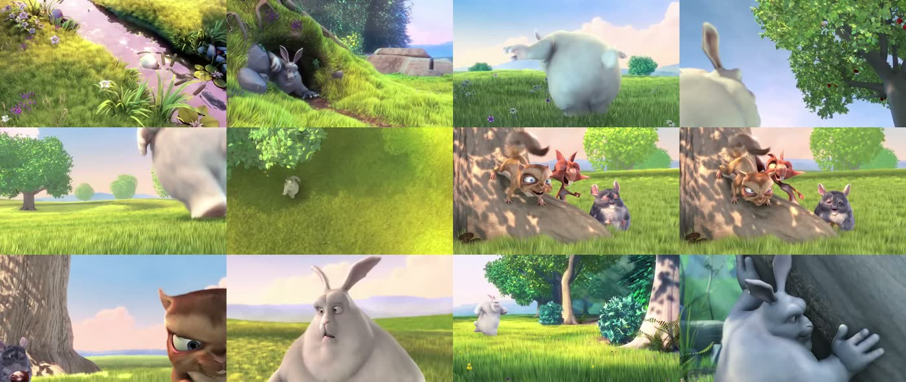

Any link becomes two things a language model already understands: a contact sheet of the frames that matter, and a transcript with timestamps.
# see it and hear it $ reelay "https://www.instagram.com/reel/XXXXXXXXX/" Extracting frames 9 frames written Contact sheet: ~/.reelay/instagram-XXXXXXXXX/contact-sheet.jpg Transcribing audio (1 chunk) Done in 31s # point the agent at the report it printed ~/.reelay/instagram-XXXXXXXXX/READ.md
Reading a dozen separate frames costs an agent roughly a dozen times the context of reading one. So Reelay tiles them — sized to the video's own aspect ratio, in shooting order, with every timestamp listed in the report.

Four steps, then it deletes the video it downloaded.
Title, author, platform, duration and caption — read before a single byte of media is fetched, so an over-long video is refused instead of downloaded.
Human-written subtitles when the platform has them, ranked by language. Otherwise Whisper. Auto-captions only as a last resort — and the report always names which one it used.
Frames chosen where the picture actually changes, then topped up at even intervals so a static talking-head shot is still covered end to end.
One markdown file with the caption, the frame grid and its timestamps, and the transcript — plus a JSON twin for anything you want to chain onto it.
A confident wrong answer is worse than an empty one.
Whisper invents speech over music. Faced with a silent timelapse it will produce a phrase like "Thanks for watching!" — and report high confidence while doing it, so its own scores can't catch it. Reelay drops a transcript made entirely of those known phantom phrases and reports the video as having no speech. A transcript that covers very little of the runtime is marked weak evidence rather than presented as fact.
Failures name their cause. A login wall, a post with no video, a deleted clip — each reads differently and each needs a different move. Reelay passes the platform's own reason through instead of flattening it to "download failed".
Anything yt-dlp reaches — roughly 1700 sites, plus local files.
Needs python3, yt-dlp and ffmpeg.
$ brew install python yt-dlp ffmpeg
$ git clone https://github.com/NspxMiguel/reelay.git
$ cd reelay && ./install.sh
$ reelay --doctor
The installer links the command into
~/.local/bin and drops the Claude Code skill into
~/.claude/skills/reelay/, so an agent picks it up on the next session.
| Flag | Default | What it does |
|---|---|---|
-n, --frames | 12 | how many frames to extract |
--transcript | auto | auto, whisper, subs, none |
--no-audio | — | only look |
--no-video | — | only listen — much faster |
--cookies | — | chrome, safari, firefox — for login walls |
--language | — | language hint for short clips |
--max-minutes | 180 | refuse anything longer |
--lang | system | interface language: en or pt |